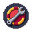

Area diaries
Eight diaries, one for each region of the world, each with four tiers: Easy, Medium, Hard and Elite. A diary is a list of things worth doing in that region, from catching its fish and finishing its quests to killing its boss and being there for its events, and finishing a tier gives a perk that only works there. That's the point: the long road past 99 shouldn't only happen on the newest map. Diaries send a level-110 player back to the Gloam with a reason, and they give a new player a to-do list for every map they reach.
The diary
It opens from a new button beside the collection log. Down the left are the eight regions, each with its emblem framed in the colour of the best tier you've finished; on the right, the region's four tiers and their tasks. Below is calvin's diary as an example: click a region and a tier. A task you can't do yet says what it needs, in red; one you could do now, in green.
 Area diaries
Area diariesWhat a tier gives
Three things every time, so finishing a tier always feels like something even when the perk is small.
 Diary task done: Catch a storm marlin from the sea belowCloudreach & the Thunderhead · Hard · 4 of 6
Diary task done: Catch a storm marlin from the sea belowCloudreach & the Thunderhead · Hard · 4 of 6
The Yard diary: Elite, finishedPlatinum medal, a 200,000 XP lamp, and the Yard's Elite perk: raids pay 10% more.Only Elite finishes go to chat. Every other task is a toast for you alone.
Every Elite perk
The top of each diary, and the reason to finish. Each one makes that region better to work in, never the whole game.
Something at every level
Tasks are counted by the highest level they need. Easy tiers are for new players, Elite tiers for the road past 99, and every band from 1 to 120 has something, which is the difference between a diary and a list of endgame chores.
Showing it off
A row on the profile, under the trading card. The cape is the one thing that shows in the world.
calvin's diarieson the profileBronze for Easy, silver Medium, gold Hard, platinum Elite. A grey ring means none yet. Hover a medal for the tiers done.
 The Grand Tour capeAll eight Elites. Worn in mockup 1's cape slot, and it carries every region's Elite perk with it, so a wearer can teleport home from any region once a day. Title: "the Well-Travelled".
The Grand Tour capeAll eight Elites. Worn in mockup 1's cape slot, and it carries every region's Elite perk with it, so a wearer can teleport home from any region once a day. Title: "the Well-Travelled".Building it
- A task is a check on something the server already sees: a kill, a gather, a craft, a quest handed in, a boss kill, being in an event when it ends, standing somewhere. Most are a line each ("catch a stormmarlin in the thunderhead"), and the server already does the work the check reads.
- Progress is one number per region (a bit for each task), saved with the character. Counted tasks ("kill 50 Bog Gnashers") use the kill counts the tracking keys already keep.
- On launch day, what you've already done counts: quests finished, levels, the collection log, boss kill counts. Nobody starts from zero on things they've already done.
- Perks are flags read where the game already reads a buff: a shop price, a catch chance, a ferry fee, a raid payout. The Grand Tour cape is one item whose effect is "all of them".
- Performance: a task check is a few comparisons on events that are happening anyway. The window is fetched when it's opened, never at login, the way the collection log is.
- Art: eight region emblems, the book, the cape and four lamps, each with PixelLab art. The four ring colours are drawn, not images.